.
.
The three divergent pieces
- Vacuum polarisation: a virtual
 loop inside a photon propagator:
loop inside a photon propagator: 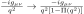
(Feynman 1949). Gauge invariance forces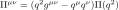
, so the photon stays massless. - Self-energy
 : the electron emits and reabsorbs a photon; shifts the mass
: the electron emits and reabsorbs a photon; shifts the mass 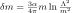
(log divergent). - Vertex
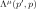
: photon exchanged across the vertex; produces form factors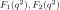
.
Regularisation and renormalisation
Regulate (cutoff, Pauli–Villars, dimensional) then define parameters by measurements:  is the pole of the full propagator;
is the pole of the full propagator;  is the charge measured at
is the charge measured at
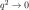
(Thomson limit). The Ward identity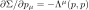
, i.e. , ensures charge renormalisation comes only from vacuum polarisation,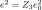
: the same for electrons, muons and protons (charge universality).Running coupling (derivation)
Renormalised
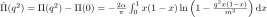
(Tomonaga 1946; Schwinger 1948). For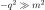
: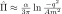
,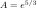
. The vacuum screens charge like a dielectric: the effective grows at short distance,
grows at short distance, 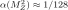
. For one gets the Uehling correction to Coulomb,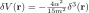
(contributes −27 MHz to the hydrogen Lamb shift).Infrared divergence
The vertex correction also diverges for soft virtual photons; it cancels against real soft-photon emission (bremsstrahlung) below detector resolution (Bloch–Nordsieck). Only inclusive rates are finite.
Worked example
Electron–electron scattering at
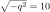
GeV with only the electron loop: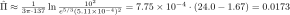
: the cross section rises by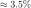
relative to fixed — clearly measured at colliders (muon and quark loops add more).
Engineering applications
Precision metrology ( from g−2 and atom recoil), radiative corrections in luminosity and electroweak measurements, and the renormalisation-group idea itself, used in critical phenomena and in effective models of materials.
Pitfall
"Infinities" are not subtracted arbitrarily: they appear only in relations between bare and measured parameters, which are not observable. Predictions relating observables are finite.